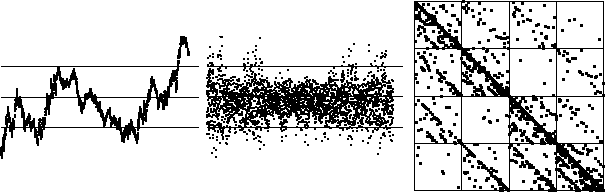

Purpose To use driven IFS to detect correlations in financial data and self-affine cartoons of that data.
Materials Data sets
Conclusion Even simple self-affine cartoons can produce driven IFS closely resembling real data. However, the closeness of the match certainly appears to depend on the random number sequence, as well as on the placement of the bin boundaries.